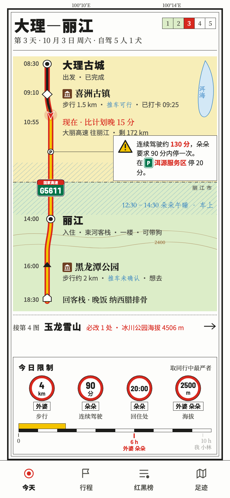
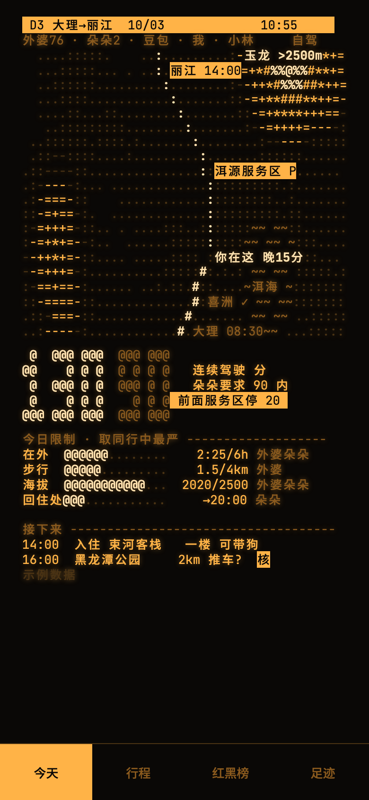
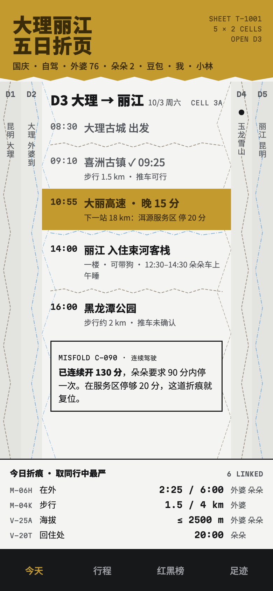
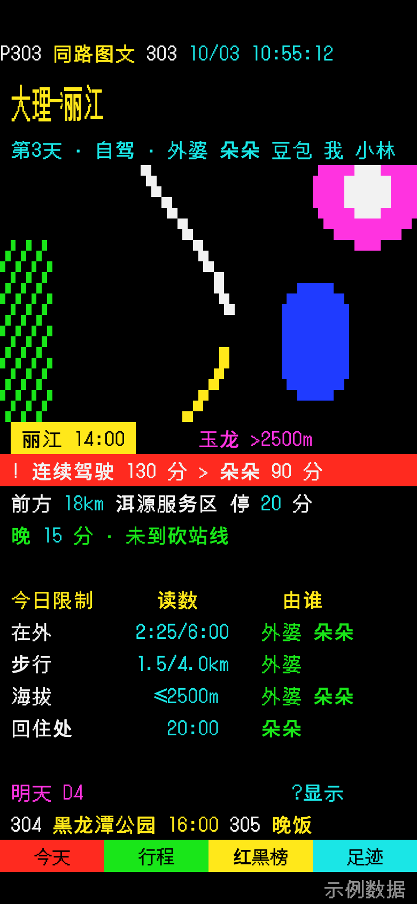
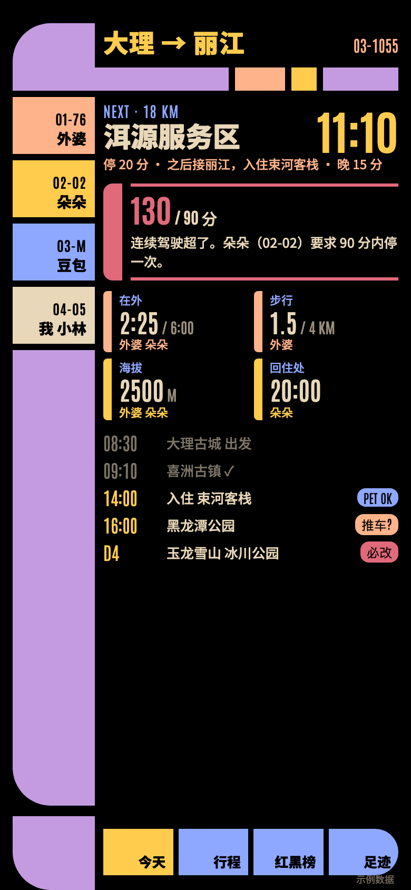
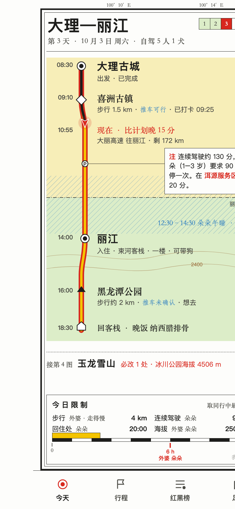
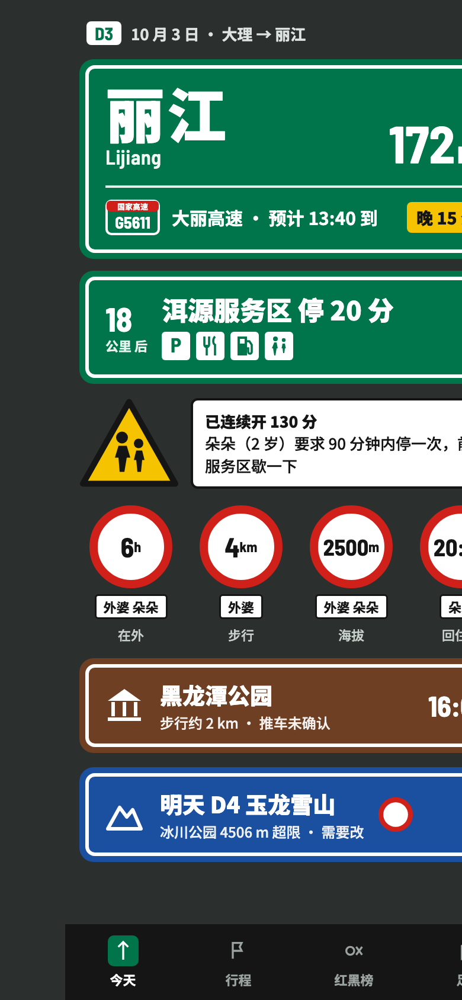
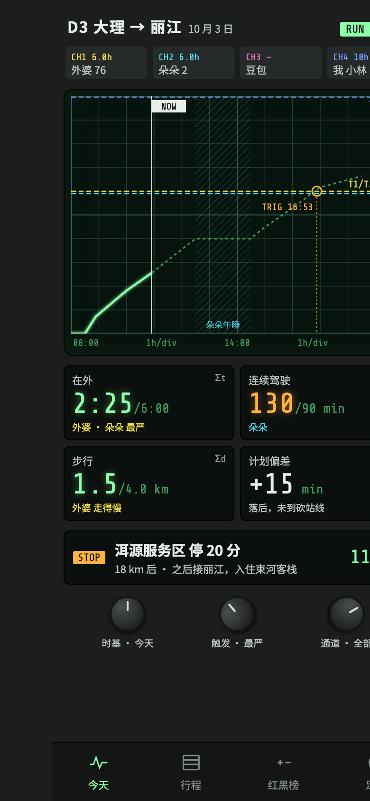
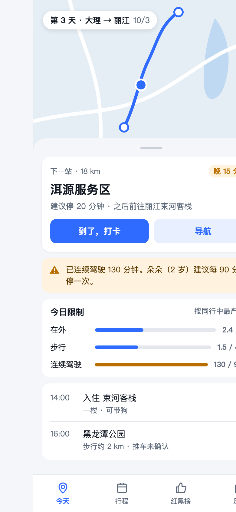

八套风格用同一份示例数据：国庆大理丽江第 3 天，外婆 76 岁走得慢、朵朵 2 岁、豆包中型犬。点图打开可交互的整页（第一手的四套含「今天」和「行程检查」两屏）。选好了回终端告诉我名字即可。

保留图廓、平涂、红边黄芯高速、图例比例尺；加入国家高速路牌盾、黄三角警告、红圈限制牌、棕色景点方标，以及 P 服务区绿标。

琥珀荧光单色，字符密度画地形，你是闪烁的 @；大号字符读数。

整趟旅程是一张折起来的纸：今天展开，其余天折在两侧；违规处折痕反了。

40×24 字符格，303 = 第 3 天，底部红绿黄青四键导航。

每个同行人一种颜色，限制色条指向收紧它的人。

每天一页地图：红边黄芯高速从上到下，限制写在图例和比例尺里。

绿牌指路、棕牌景点、黄三角警告、红圈是今天的限制。

每人一个通道，同一条行程曲线扫过所有人的触发线。

地图头图 + 白色圆角卡片 + 一种蓝，和同类 App 一样。